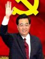

Forums galactiques > Assemblée Galactique : diplomatie officielle > Relations franco-chinoises
Pages : 1
| Pdt Hujintao Chine Respect diplomatique : 0  08/11 ETU 13:04 | Score : 0 Détails Mon cher président chirac, je me permet de mettre ce discours prononcé par moi en janvier 2004, (ancienne date terriennemais monsieur leprésident comprendra)pour vous refaire part que notre entente reste la même, malgré les évènements récents.
En effet la grippe aviaire est apparu dans mon pays et est malheureusement apparue dans le votre.Vous m'avez demandé des dédommagements, soit, mais j'esperais en retour une aide de votre part et une intervention de l'armée française pour aider mon peuple qui a fort besoin d'une aide extérieur que nous sommes encore pas en mesure de donner. Quant au pdt Bush, je n'oserai lui demander de l'aide, et même si je lui demandais, la réponse serait surement négative de sa part. J'ai souhaité rendre public ce message pour que tout le monde soit témoin de ma bonne volonté et de celle de mon vis à vis français par rapport à la situation dans nos deux pays. Peut être trouve t-il se message un peu déplacé en ces temps de guerre civile sur sa planète mère ( qui j'espère sera le plus rapidement terminée), mais sachez que je trouve ce point assez important et puis mon peuple sur ma planète mère Terre_Chinoise commence à s'impatienter. Sur ce j'espère que mon message aura été compris de tous et que nos relations n'iront qu'en s'améliorant. --------------------===>>>>COM-X TEMPOREL_RETOUR JANVIER 2004<<<<===-------------------- "Monsieur le Président, Mesdames et Messieurs les Commandant(e)s, Mesdames et Messieurs, Aujourd'hui, c'est pour moi un grand plaisir d'être parmi vous dans ce prestigieux Palais Bourbon. Permettez-moi tout d'abord de vous adresser, et à travers vous, au grand peuple français, les meilleurs voeux du gouvernement et du peuple chinois. La France et la Chine sont deux grandes nations dotées d'une histoire et d'une culture très anciennes. Le fait de se trouver aux deux extrémités du continent eurasiatique, cet éloignement géographique, n'a pas constitué d'obstacle pour les échanges entre les deux peuples qui remontent très loin dans l'histoire. Il y a cinq siècles, le grand écrivain français François Rabelais avait laissé entendre que la fabuleuse « Dive bouteille » se trouvait en Chine, dans son oeuvre éternelle sur les aventures de Pantagruel. Au XVIIIe siècle, Voltaire et Montesquieu, penseurs français des Lumières, ont fait des descriptions fascinantes sur la Chine du point de vue de l'éthique, de la morale, de la science, de la technologie et des us et coutumes, dans leurs oeuvres qui ont fait époque. Sous l'impulsion de ces savants et philosophes français, il y a en Europe un engouement pour la Chine qui a duré un demi-siècle. A partir du XIXe siècle, lorsqu'on se mettait, en Orient, à l'école de l'Occident, la civilisation française a été présentée en Chine sur une grande envergure. C'est alors que les oeuvres des grands maîtres français comme Voltaire, Montesquieu, Jean-Jacques Rousseau, René Descartes, Victor Hugo, Honoré de Balzac et Alexandre Dumas père ont été traduites et retraduites en chinois, qui ont été d'importantes vitrines par lesquelles les Chinois ont pu connaître l'Occident. La Révolution française a beaucoup inspiré le peuple chinois dans sa lutte à l'époque moderne contre le régime féodal autoritaire. Au début du XXe siècle, un grand nombre d'étudiants chinois, animés de l'ambition de sauver la nation, sont partis pour la France, à la recherche de la voie de transformation pour la Chine et des sources d'inspiration idéologiques et artistiques modernes. Parmi eux, il y avait non seulement Zhou Enlai, Deng Xiaoping et Chen Yi, futurs dirigeants éminents de la révolution chinoise, mais aussi Ba Jin, Qian Zhongshu, Xu Beihong et Xian Xinghai, grands maîtres de la littérature et de l'art chinois. Ce long processus d'échanges et d'inspiration mutuels entre les cultures chinoises et françaises a jeté une base solide pour le développement de l'amitié entre les deux peuples et des relations entre les deux pays. Il y a 40 ans, le président Mao Zedong et le général Charles de Gaulle, avec la grande vision qui était la leur, ont décidé d'établir des relations diplomatiques au niveau d'ambassadeur entre le Chine et la France, deux grands pays de l'Orient et de l'Occident, ouvrant ainsi une nouvelle page dans les relations sino-française. Au cours des quatre décennies écoulées, grâce aux efforts communs des dirigeants de plusieurs générations et des personnalités des différents milieux des deux pays, les rapports sino-français ont soutenu l'épreuve du temps et des aléas dans la situation internationale. Ces dernières années, en particulier, les échanges et la coopération entre la Chine et la France ont donné des fruits réjouissants dans les divers domaines, tandis que les relations bilatérales ont atteint l'âge de la maturité et n'ont cessé de se consolider. A l'occasion du 40e anniversaire des relations diplomatiques entre la Chine et la France, ma visite en République française montre bien au monde que consolider et développer les relations avec la France constitue une politique bien arrêtée de le Chine. Nous oeuvrerons inlassablement pour ce but. La nation française a apporté une contribution remarquable au progrès de la civilisation humaine, et sa culture, un trésor de toute l'humanité, a une grande capacité d'assimilation et d'innovation. Dans le monde d'aujourd'hui, la France joue un rôle important grâce à son économie développée, ses sciences et technologie avancées, sa culture originale et son action diplomatique indépendante. Très attachée à ses relations avec la France, la Chine continuera, comme par le passé, à considérer les relations bilatérales avec une vision stratégique et à long terme, et oeuvrera de concert avec la France pour les porter sans cesse à de nouveaux paliers. Durant ma présente visite, j'ai eu d'amples discussions approfondies avec le président Chirac et nous estimons tous les deux que dans le contexte actuel international en profonde mutation, l'approfondissement du partenariat global stratégique sino-français correspond non seulement aux intérêts fondamentaux des deux peuples. A cette fin, les deux parties devront mettre l'accent sur les trois priorités suivantes : Premièrement, renforcer la confiance mutuelle sur le plan politique en faveur d'une coopération stratégique approfondie. Membres permanents du Conseil de Sécurité de l'ONU, la Chine et la France sont deux pays influents dans les affaires internationales. Elles sont attachées à la multipolarité du monde et à la défense de l'autorité de l'ONU, et se déclarent favorables à l'instauration d'un nouvel ordre politique et économique international conforme à la volonté des peuples. Elles partagent une large identité de vues et des intérêts communs face aux divers défis qu'affronte l'humanité et dans le traitement judicieux des grands dossiers internationaux. La Chine est prêt à renforcer son dialogue et ses consultations avec la France sur les questions d'importance telles que la lutte anti-terroriste, la non-prolifération, la lutte contre la criminalité transnationale, la promotion du développement commun et le renforcement du rôle de l'ONU, en vue d'une coopération accrue pour contribuer ensemble à la préservation de la paix et à la promotion d'un développement partagé dans le monde. Deuxièmement, accroître la coopération économique et commerciale, dans une logique de complémentarité et d'avantages réciproques. La Chine le plus grand pays en développement et un vaste marché, concentre actuellement tous ses efforts sur sa modernisation. La France, pays développé, est à l'avant-garde du monde sur le plan économique et technico-scientifique, possédant des technologies de pointe dans de nombreux domaines. Nos deux économies sont donc fort complémentaires et notre coopération économique et commerciale, très prometteuse. Le volume du commerce bilatéral est passé de 100 millions USD il y a 40 ans à plus de 13 milliards USD en 2003. La France a investi au total dans 2 302 projets en Chine, avec 6,11 milliards USD réalisée, ce qui la plus aux premiers rangs des pays européens. Mais, pour parler franc, le potentiel de la coopération sino-française est loin d'être entièrement mis en valeur, vu l'importance de la Chine et de la France dans le commerce international et de la complémentarité des deux économies. La Chine représente maintenant un grand marché d'importation de plus de 400 milliards USD par an. Grâce à son développement elle offrira encore davantage de chances aux différents pays du monde dont la France. Nous sommes prêts à approfondir notre coopération globale avec la France, notamment en ce qui concerne les hautes technologies, l'agriculture, la protection de l'environnement et les PME-PMI, pour étendre sans cesse cette coopération à de nouveaux domaines, la faire accéder à de nouveaux paliers, et finalement, instaurer un partenariat économique et commercial stable entre les deux pays. Troisièmement, intensifier et enrichir les échanges culturels. Ceux-ci constituent un canal important pour l'approfondissement des échanges entre le différentes nations et une base importante de leur bonne entente. L'inspiration et l'assimilation mutuelles entre le différentes cultures jouent un rôle essentiel pour promouvoir une meilleure compréhension entre les différents peuples du monde. La Chine et la France sont dotées chacune d'une brillante culture très caractéristique et se sentent une attirance culturelle l'une pour l'autre. Développer en profondeur les échanges culturels, cela favorise non seulement la prospérité de nos deux cultures, mais également le dialogue et la communication entre les différentes civilisations, de même que l'harmonie et le progrès de la société humaine. L'Année de la Chine, qui se tient actuellement en France, montre de manière vivante au public français le charme de la très ancienne culture chinoise et le grand dynamisme de sa culture contemporaine. En octobre prochain, l'Année de la France sera inaugurée en Chine, qui sera certainement appréciée par le public chinois. Nous sommes disposés à intensifier nos échanges culturels avec la France, pour que nos deux grandes cultures s'inspirent de plus près l'une de l'autre et que ces deux belles fleurs de la civilisation humaine deviennent plus éclatantes dans le magnifique jardin des cultures du monde. Mesdames et Messieurs, La nation chinoise est une vielle nation. Au cours des 5 000 ans d'histoire, elle a créé une splendide culture et apporté une contribution impérissable au progrès de la société humaine. La Chine était, avant le XVIe siècle, à l'avant-garde du développement économique et technico-scientifique. Mais, à partir du XVIe siècle, elle s'est laissé peu à peu dépasser dans la formidable vague du développement des sciences, des technologies et des cultures. Après le milieu du XIXe siècle, la Chine a été réduite progressivement à un Etat semi-colonial et semi-féodal en raison du régime féodal corrompu et de l'invasion des puissances étrangères. Le peuple chinois a mené un combat de longue haleine pour changer son sort misérable. Sous la conduite du Parti communiste chinois, il a enfin remporté, au milieu du siècle dernier, la victoire de la nouvelle révolution démocratique pour fonder un nouvel Etat. Il est devenu désormais maître du pays, a pris en main son destin et s'est engagé sur la voie du socialisme. Il y a 25 ans, sous la conduite de Monsieur Deng Xiaoping, la Chine a lancé une nouvelle politique de réforme et d'ouverture sur l'extérieur pour explorer une nouvelle voie du développement socialiste, en axant toutes ses activités sur sa modernisation. Ses efforts ont été couronnés de succès remarquables et remarqués. Après 25 ans d'efforts inlassables, de 1979 à 2003, les forces productives de la société chinoise et la puissance globale de la Chine n'ont cessé de se développer pour atteindre de nouveaux paliers ; le système d'économie de marché socialiste a été institué pour l'essentiel ; une économie ouverte sur l'extérieur a été mis en en place ; tous les secteurs d'activité ont connu un développement général et la population chinoise, dans son ensemble, a accédé à une vie d'aisance moyenne. Je vais vous citer des chiffres pour illustrer ce que je viens de dire : en 25 ans, le PIB est passé de 147,3 milliards USD à plus de 1 400 milliards USD ; le volume d'import-export, de 20,6 milliards à 851, 2 milliards ; les investissements étrangers effectivement réalisés, qui étaient nuls, ont atteint 679,6 milliards ; la réserve en devises étrangères est passée de 167 millions à 403,3 milliards ; la population pauvre a été réduite de 250 millions à 30 millions ; les autoroutes, inexistantes à l'époque, ont atteint 29 800kilomètres ; les téléphones fixes sont passés de 1,92 millions à 260 millions avec une croissance mensuelle moyenne de 5,25 millions ; et la Chine occupe aujourd'hui la première place pour la production de charbon brut, d'acier, de ciment, de téléviseurs-couleurs et de téléphones portables. Tous ces chiffres illustrent bien les changements sans précédent qu'a connus la Chine depuis 25 ans. Si ces changements considérables sont intervenus en Chine, c'est parce que nous avons persévéré dans la voie du socialisme à la chinoise et dans la politique de réforme et d'ouverture sur l'extérieur ; parce que nous avons veillé à tout instant à lever les obstacles institutionnels au développement des forces productives pour mobiliser la créativité, l'enthousiasme et l'initiative du peuple tout entier, et donner une forte impulsion au développement harmonieux des civilisations matérielle, politique et spirituelle. La réforme en Chine est une réforme globale qui s'opère dans les domaines économique, politique et culturel. La réforme du système économique s'accompagne de celle sur le plan politique. La démocratie socialiste constitue un objectif que nous poursuivons constamment. Nous avons dit clairement que sans la démocratie, il n'y aurait pas de socialisme, ni de modernisation socialiste. Nous avons donc déployé de grands efforts pour promouvoir la réforme des structures politiques, parfaire les systèmes concrets pour la réalisation de la démocratie socialiste s et assurer au peuple la pleine jouissance de leurs droits pour ce qui est des élections, de la prise de décisions de la gestion et de la supervision démocratiques. Ces dernières années, nous avons mené une série de réformes qui ont d'ailleurs donné des résultats tangibles en ce qui concerne les systèmes de direction de l'Etat, de législation, d'administration de décision, de justice, de personnel, de démocratie à la base et de supervision et contrôle. Le peuple chinois a vu leurs droits civils et politiques ainsi que leurs libertés fondamentales sauvegardés et protégés en vertu de la loi. La Chine a adhéré à 21 conventions internationales sur les droits de l'homme. L'Assemblée populaire nationale (APN) de Chine a déjà ratifié le « Pacte international relatif aux droits économiques, sociaux, et culturels ». Et le gouvernement chinois est en train d'examiner les questions importantes liées au « Pacte international relatif aux droits civils et politiques », qui sera, une fois toutes les conditions réunies, soumis à la ratification de l'APN. Nous poursuivrons résolument notre réforme du système politique, et continuerons à appliquer le principe de « gouvernement du pays selon la loi » et à bâtir un Etat de droit socialiste en développant sans cesse la démocratie socialiste. La réforme et l'ouverture sur l'extérieur ont enregistré des succès indéniables. Mais avec ses 1,3 milliards d'habitants et une base économique faible, la Chine demeure un pays aux forces productives sous-développées, confronté aux inégalités de développement entre régions. Classée 6e pour son PIB, la Chine n'est pas dans les cent premiers pays pour son PIB par habitant qui dépasse à peine 1 000 USD. Elle a encore un long chemin à parcourir avant de réaliser sa modernisation et d'assurer à tous les Chinois une vie aisée. Nous nous sommes déjà fixé l'objectif à atteindre pour les deux premières décennies de ce siècle, c'est de concentrer tous nos efforts pour édifier sur tous les plans une société d'aisance moyenne et de quadrupler, en 2020, le PIB sur la base de 2 000, pour atteindre 4 000 milliards USD, soit 3 000 USD par habitant. Afin de réaliser cet objectif, nous resterons fidèles à la théorie de Deng Xiaoping et concept fondamental de la « triple représentations », et ayant toujours l'homme au centre de nos préoccupations, nous centrerons nos efforts sur l'édification économique et appliquerons ferment la politique de réforme et d'ouverture sur l'extérieur en nous attachant qu concept de développement global, coordonné et durable, pour assurer un développement harmonieux entre la ville et la campagne, entre les régions, entre la croissance économique et le progrès social, entre l'homme et la nature, et entre le développement à l'intérieur et l'ouverture sur l'extérieur. Nous poursuivrons nos efforts pour développer l'économie de marché socialiste, la démocratie socialiste et la culture avancée socialiste, en vue d'un épanouissement global de l'économie, de la société et de l'homme. Mesdames et Messieurs, Taiwan fait partie intégrante de la Chine. Régler le problème de Taiwan et réaliser la réunification totale de la Chine, voilà l'aspiration commune de tous les Chinois. Ayant la même racine, la population de Taiwan et celle de la partie continentale sont des frères et soeurs de chair et de sang. Toujours fidèles au principe de 'réunification pacifique et un pays, deux systèmes », nous ferons le maximum d'efforts pour réaliser la réunification pacifique de la Chine. Nous nous opposons fermement à l'« indépendance de Taiwan », et nous ne saurons permettre à qui que ce soit, de séparer Taiwan du reste de la Chine sous une forme ou un autre. Nous entendons, sur la base du principe d'une seule Chine, oeuvrer ensemble avec tous les Chinois en Chine et à l'étranger, y compris nos compatriotes de Taiwan, pour la réalisation de la réunification complète de la Chine. Nous apprécions hautement la maintien par la France de la politique pour l'unicité de la Chine et contre les agissements des autorités taiwanaises tendant à « l'indépendance de Taiwan » sous l'enseigne de « référendum ». Mesdames et Messieurs, La paix et le développement sont deux grands thèmes de notre époque. La multipolarisation et la mondialisation constituent des tendances inéluctables. Pourtant, le monde d'aujourd'hui n'est pas tranquille. L'unilatéralisme se manifeste sous des jours nouveaux, le terrorisme fait plus de ravages, divers conflits et guerres locaux se succèdent, les facteurs d'insécurité classiques et non classiques s'entremêlent, la criminalité transnationale sévit davantage, et le fossé Nord-Sud se creuse toujours plus. Tous ces défis et difficultés rendent nécessaire une réponse commune de tous les peuples du monde. La Chine restera fidèle à sa politique extérieure d'indépendance et de paix, dont l'objectif est de défendre la paix dans le monde et de promouvoir un développement commun. Nous préconisons la démocratisation des relations internationales, le règlement des différends par le dialogue et la coopération, et la gestion des affaires du monde à travers des consultations d'égal entre les pays, et nous nous opposons au recours arbitraire à l'usage de la force ou à la menace par la force. Nous estimons qu'il faut renforcer la coopération internationale pour éradiquer la pauvreté, protéger l'environnement et réaliser la prospérité commune de tous les peuples. La paix, c'est le plus grand bonheur de l'humanité. La nation chinoise a toujours été une nation pacifique. Le développement de la Chine contribue à la paix mondiale et au développement commun. Cela fait longtemps que la Chine a déclaré solennellement au monde qu'elle ne prétendait, ni ne prétendrait jamais, à l'hégémonie, et qu'elle serait toujours une force militant résolument en faveur de la paix mondiale. Mesdames et Messieurs, Après plus d'un demi-siècle d'évolution, l'Union européenne est devenue aujourd'hui l'organisation interétatique la plus importante et la plus intégrée. Aux différentes étapes de la construction européenne, la France a toujours joué un rôle clé, avec la contribution des personnalités comme Robert Schuman qui a lancé le « Plan pour la Communauté européenne du Charbon et de l'Acier » et Jean Monnet réputé comme « père fondateur de la Communauté européenne ». La Chine soutient le processus d'intégration de l'UE, et elle souhaite voir l'UE continuer à jouer un rôle actif dans les affaires régionales et internationales. Sous l'impulsion de la France et d'autres pays européens, les relations sino-européennes ont connu un grand développement. En octobre 2003, le 6e Sommet Chine-UE s'est tenu avec succès à Beijing, au cours duquel les deux parties se sont mises d'accord pour développer un partenariat global stratégique entre elles. La Chine est prête à renforcer le dialogue et la coopération avec l'UE et ses membres dont la France dans les différents domaines et sur la base du respect mutuel, de l'égalité et de la réciprocité, afin d'instaurer les relations sino-européennes dans la durée. Oeuvrons donc ensemble pour un plus grand développement des relations sion-françaises au cours du nouveau siècle, dans l'intérêt de nos deux peuples et d'un monde plus prospère et plus stable. Je vous remercie." --------------------===>>>>FIN DU COM-X_RETOUR AU PRESENT<<<<===-------------------- | ||
| Napoléon Respect diplomatique : 345  09/11 ETU 15:49  | Score : 0 Détails 2004? Vous remontez vraiment loin! Le bon vieux temps de nos ancetres...
| ||
| AlphonseHubert Respect diplomatique : 690  09/11 ETU 15:53 | Score : 0 Détails Le bicentenaire de votre couronnement, mon vieux...
|
Pages : 1
Forums galactiques > Assemblée Galactique : diplomatie officielle > Relations franco-chinoises